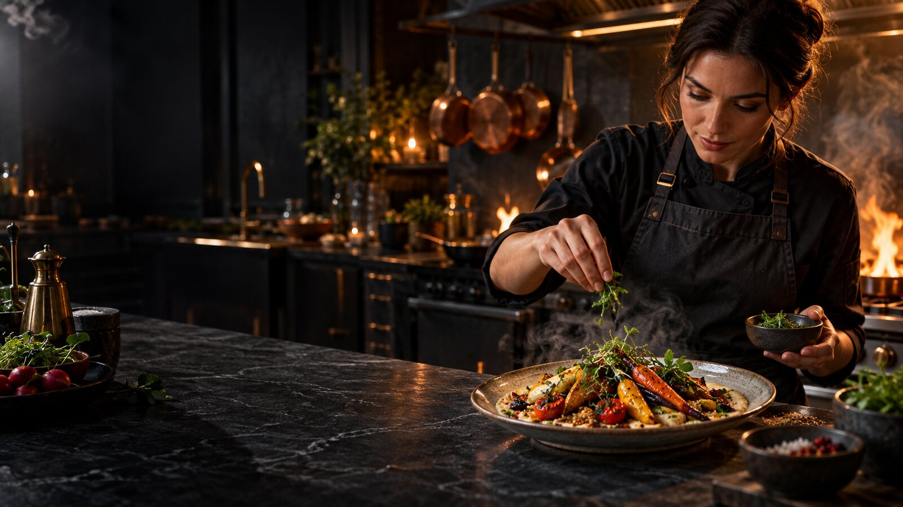
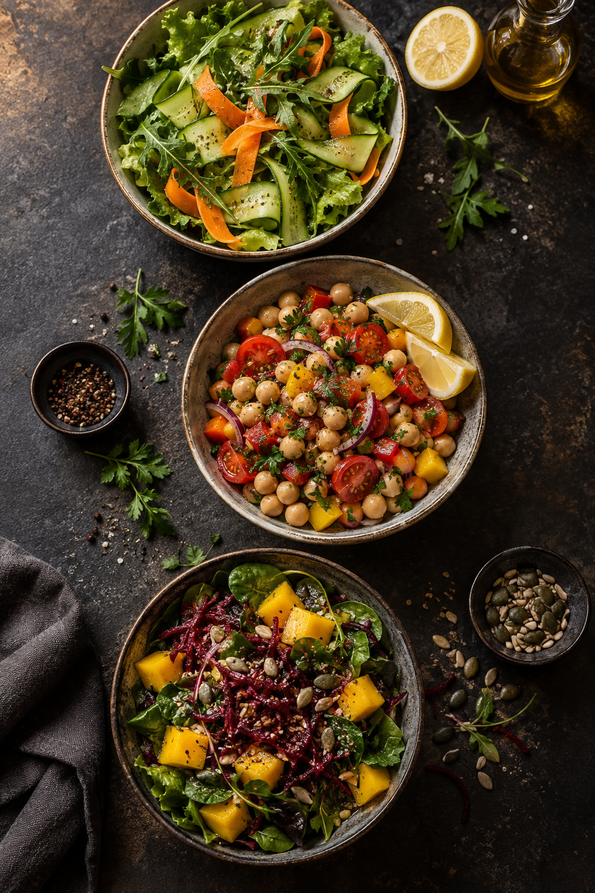

Chama e resposta rápidaForno a gás
Vantagens: aquece rápido, costuma ser econômico e funciona mesmo onde a rede elétrica é instável. Desvantagens: pode distribuir calor de modo irregular; requer ventilação, manutenção e atenção a vazamentos.

Habilidades Domésticas
Uma cozinha de verdade une precisão, higiene, planejamento e cuidado. Este guia reúne as técnicas e práticas para cumprir cada etapa da especialidade com segurança.
A base da jornada
O primeiro requisito é possuir a Especialidade de Arte Culinária. Ela apresenta o domínio do fogão, utensílios, técnicas de cocção, nutrição e serviço à mesa. Aqui, o desafio sobe de nível: controle, conservação, cardápio e prática consistente.
Mise en place
Na cozinha, unidades não são detalhe. Elas garantem textura, rendimento e segurança.
| Medida | Resposta |
|---|---|
| 1 litro | 1.000 ml |
| 1 xícara de chá | 16 colheres de sopa (aprox. 240 ml) |
| 1 colher de sopa | 3 colheres de chá (15 ml) |
| 1 colher de chá | 5 ml |
Calor sob controle
Conheça o equipamento antes de confiar nele para assar um bolo, gratinar um prato ou preparar pão.
Vantagens: aquece rápido, costuma ser econômico e funciona mesmo onde a rede elétrica é instável. Desvantagens: pode distribuir calor de modo irregular; requer ventilação, manutenção e atenção a vazamentos.
Vantagens: controle preciso de temperatura, calor mais uniforme e modelos com grill. Desvantagens: consome energia, demora a aquecer e deixa de funcionar em falta de luz.
Vantagens: ventilador circula ar quente, assando mais rápido e dourando bem com pouca gordura. Desvantagens: capacidade menor; receitas podem ressecar ou queimar se não houver ajuste de tempo e temperatura.
Segurança alimentar
Intoxicação alimentar é a doença causada pela ingestão de alimento ou água contaminados por microrganismos, toxinas ou substâncias químicas. Náusea, vômito, dor abdominal, diarreia e febre podem aparecer horas ou dias depois.
A faixa entre 5 °C e 60 °C favorece a multiplicação rápida de bactérias. Não descongele alimentos na bancada: use a geladeira, o micro-ondas ou água fria corrente em embalagem vedada. Nunca prove comida com cheiro ou aparência suspeitos — algumas toxinas não mudam sabor nem odor.
5–60 °C
A “zona de perigo” da segurança dos alimentos.
Geladeira organizada
Os tempos abaixo consideram geladeira a 4 °C ou menos, embalagem adequada e boa aparência. Em dúvida, descarte.
| Alimento | Tempo recomendado na geladeira | Cuidados |
|---|---|---|
| Leite pasteurizado aberto | 3 a 5 dias | Fechar bem e manter ao fundo, não na porta. |
| Ovos crus com casca | 3 a 5 semanas | Guardar na embalagem original, sem lavar antes de usar. |
| Ovos cozidos | Até 7 dias | Refrigerar em até 2 horas; preferir manter a casca. |
| Maionese caseira | 3 a 4 dias | Use ovos pasteurizados; a industrializada segue o rótulo. |
| Carne crua | 1 a 2 dias (moída/aves); 3 a 5 dias (cortes) | Na prateleira inferior, em recipiente fechado. |
| Sobras prontas | 3 a 4 dias | Dividir em porções rasas, etiquetar e reaquecer uma única vez. |
| Hortaliças | 3 a 7 dias, conforme a espécie | Secas, em pote ou saco ventilado; folhas duram mais lavadas e bem secas. |
Referência prática: orientações de segurança alimentar da USDA/FoodSafety.gov. Para alimentos industrializados, prevalece sempre o rótulo.

Do campo à mesa
Folhas frescas são resultado de limpeza e secagem: lave em água corrente, sanitize conforme a orientação do produto próprio para alimentos, enxágue quando indicado e seque bem. A umidade restante acelera o murchamento.
Alface, rúcula, pepino, cenoura e molho de limão com azeite.
Grão-de-bico cozido, tomate, pimentão, salsinha, cebola-roxa e limão.
Folhas, manga, beterraba ralada, sementes e vinagrete suave.
Planejamento de sete dias
Cada dia combina fonte energética, construtora e reguladora. O planejamento evita improviso e permite aproveitar sobras com segurança.
Reaproveitar é usar sobras que foram resfriadas logo, armazenadas corretamente e reaquecidas por completo — não manter comida à temperatura ambiente.
Café da manhã
Um desjejum equilibrado inclui carboidrato de boa qualidade, proteína e fruta. Exemplo: aveia cozida no leite ou bebida vegetal, banana, sementes e uma porção de iogurte natural; água ou infusão sem cafeína para acompanhar.
Fornecem energia e fibras para a manhã. Prefira grãos e versões menos refinadas.
Contribuem com proteína para saciedade e manutenção dos tecidos.
Vitamina, minerais, água e fibras. Varie as cores ao longo da semana.
Na prática
Ingredientes: 1 xícara de arroz integral, 2½ xícaras de água quente, alho, cebola, azeite e sal.
Ingredientes: 1 xícara de grãos de soja secos, água e temperos.
Escolhas conscientes
Vinagre é ácido: em excesso pode irritar boca, estômago e esmalte dental; dilua e não trate como remédio. Shoyu costuma ter muito sódio; escolha versão reduzida em sódio e use pouco. Glutamato monossódico realça sabor, mas temperos prontos podem somar muito sódio; prefira ervas, alho, cebola e especiarias.
Enlatados podem contribuir com sódio; prefira versões sem adição de sal e enxágue quando possível. Embutidos (salsicha, presunto, salame) são ultraprocessados, geralmente ricos em sódio, gordura saturada e conservantes. Devem ser exceção, não base da alimentação.
Olhar atento
A cafeína estimula o sistema nervoso: pode aumentar alerta e reduzir temporariamente a sonolência, mas também pode causar ansiedade, palpitações, refluxo e prejuízo do sono, sobretudo em doses altas ou no fim do dia. Crianças e adolescentes devem evitar bebidas energéticas.
Grãos, espresso, coado e instantâneo.
Preto, verde, branco, mate e oolong — não confundir com infusões sem cafeína.
Refrigerantes tipo cola, energéticos e shots estimulantes.
Especialmente chocolate amargo e bebidas de cacau.
Em pó, extratos, bebidas e suplementos.
Produtos para dor, resfriado ou disposição podem conter cafeína; leia a bula.
Projeto final
Prepare vinte e cinco receitas novas, com no máximo cinco doces ou sobremesas. As receitas realizadas na especialidade básica não entram nesta contagem.
Nome da receita, data, rendimento, ingredientes medidos, modo de preparo numerado, foto ou desenho do resultado e uma observação pessoal. Anote o que ajustaria: é assim que técnica vira experiência.